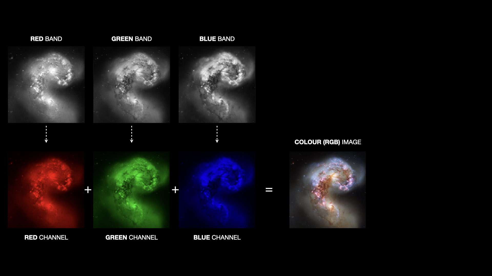

Colouring the Universe
Images obtained by observatories such as Hubble are not automatically in colour. Instead 3 (or more) different monochromatic images are combined to form the image.
Select an image
Click an image to select it. You can always change your mind later.
Alternatively you can upload any image:
Create colour composite
Use the sliders to change the contribution to the colour image from each of the separate channels.
Hubble's Story was developed and led by a team at the University of Sussex with assistance from scientists at 10 other UK universities. Hubble's Legacy is also supported by the Science and Technologies Facilities Council.